Ce qui change sur un petit écran
Cinq décisions, et elles se voient dans chaque capture
| La décision | Sur un portable | Sur un téléphone |
|---|---|---|
| Les outils | Un rail vertical à droite, toujours visible | Une barre au bas de l'écran, sept icônes, repliable d'un geste |
| Le banc de réponses | Une colonne à côté des questions | Un bandeau collant juste au-dessus de la barre d'outils : la réponse reste sous le pouce pendant qu'on fait défiler |
| Les colonnes | Question et réponse côte à côte | Empilées, la zone de dépôt sous sa question |
| Le glisser-déposer | À la souris | Au doigt — et un appui simple suffit : choisir l'étiquette, puis toucher la case |
| Le texte et les cibles | 17 px, boutons de 44 px | Les mêmes : rien n'est rapetissé pour faire entrer plus de choses |
Entrer
Du portail au module


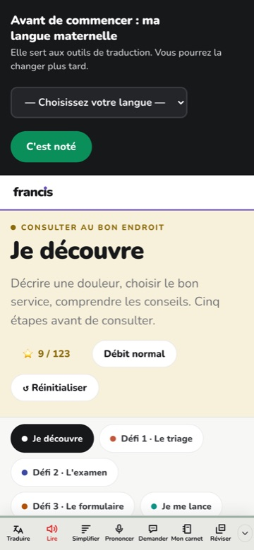
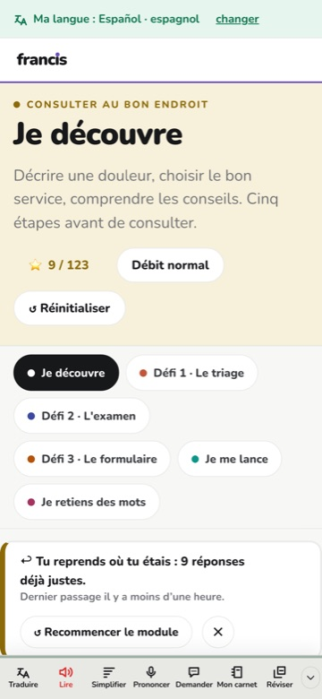
Comprendre
Écouter, puis retenir les mots
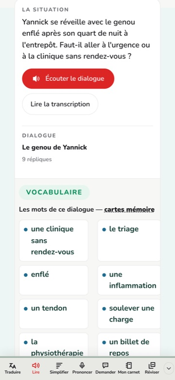
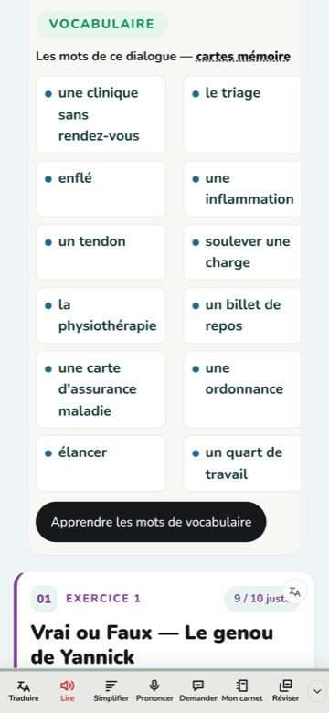
Répondre
Les sept familles d'exercices
Les 87 modules sont construits avec sept familles d'exercices, et sept seulement. C'est ce qui rend le cours reconnaissable : l'élève apprend une fois comment on répond, puis il ne réapprend plus jamais.
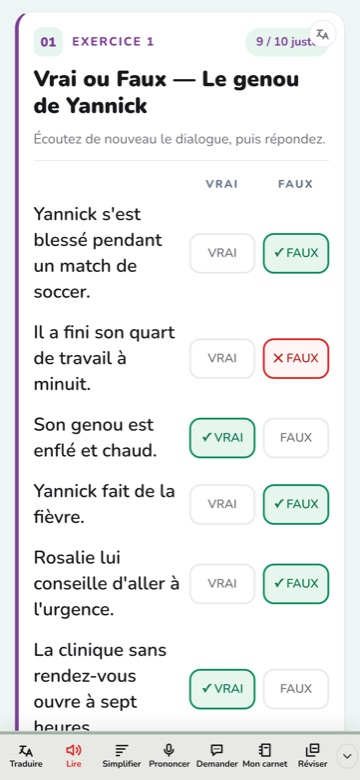
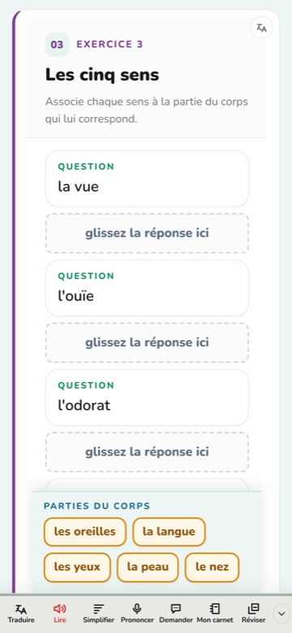
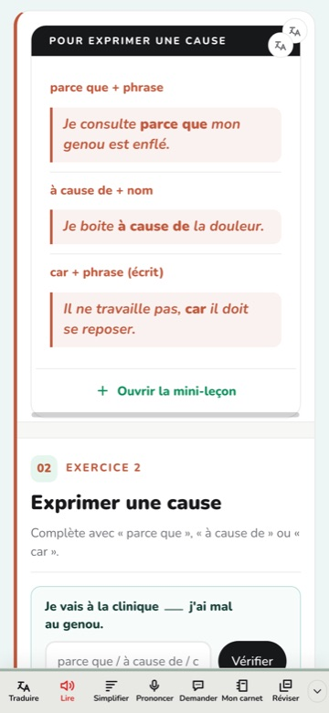
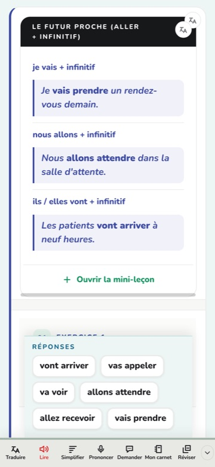
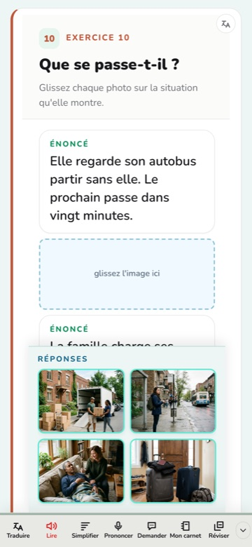
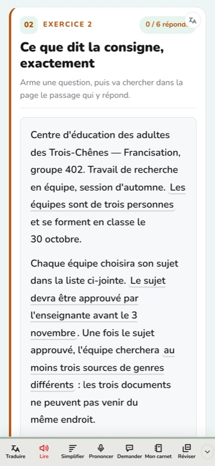
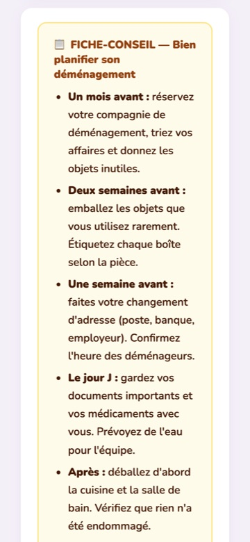
Produire
Parler et écrire depuis le téléphone
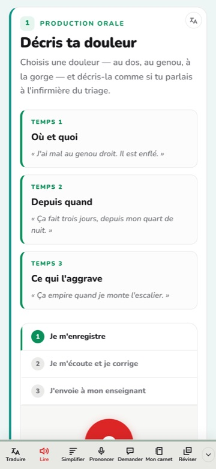
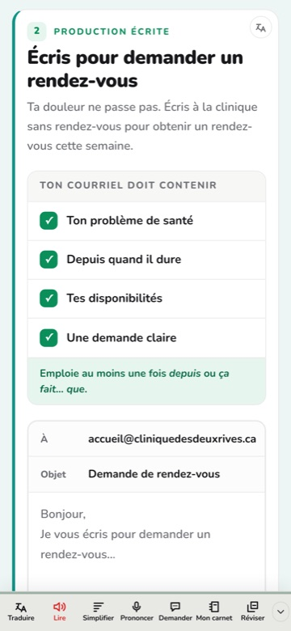
S'aider, réviser, entrer sans compte
Le reste de l'écran
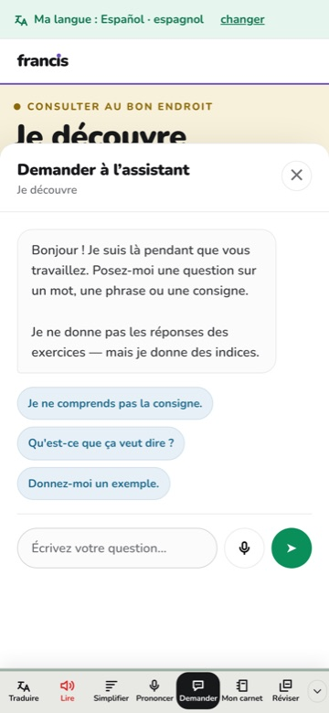
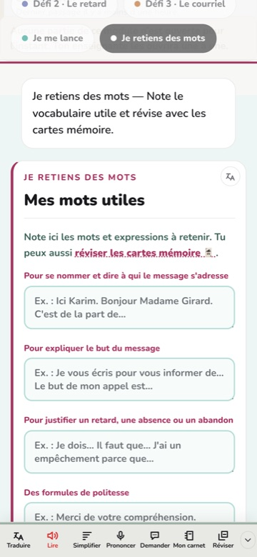
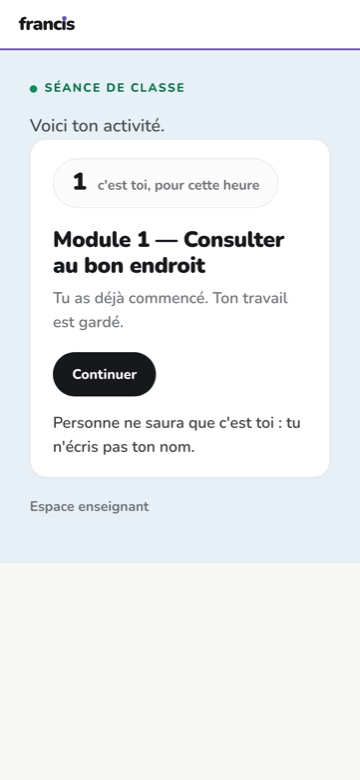
Ce qu'il n'y a pas : pas d'application à installer, pas de compte d'App Store, pas de mise à jour à faire faire à seize personnes en même temps. Le cours s'ouvre dans le navigateur du téléphone, et c'est le même fichier qui sert le portable de l'école, la tablette du local et le téléphone de l'élève. Ce que la direction règle vaut donc pour les trois d'un coup.